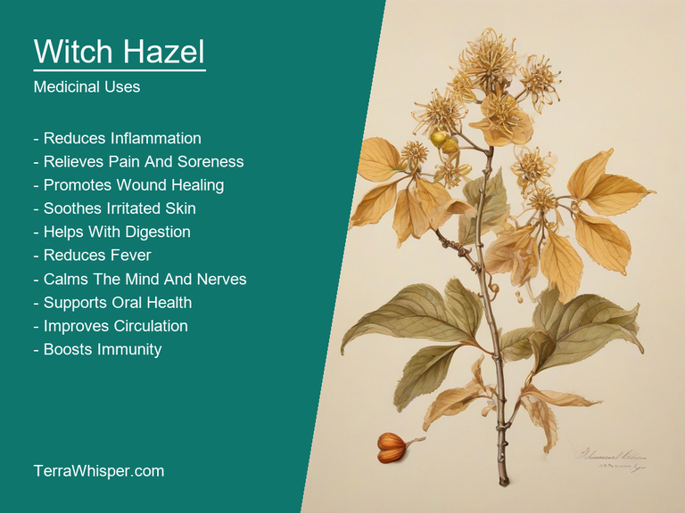
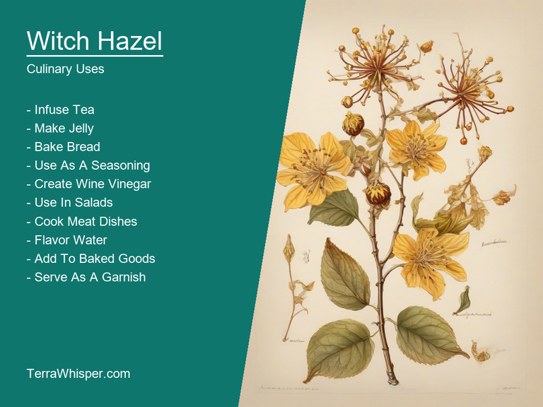
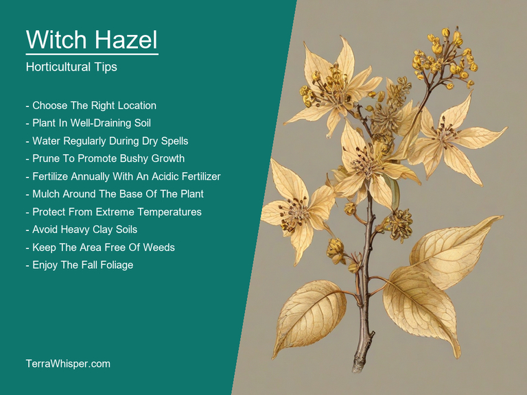
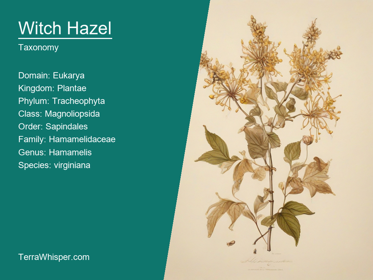
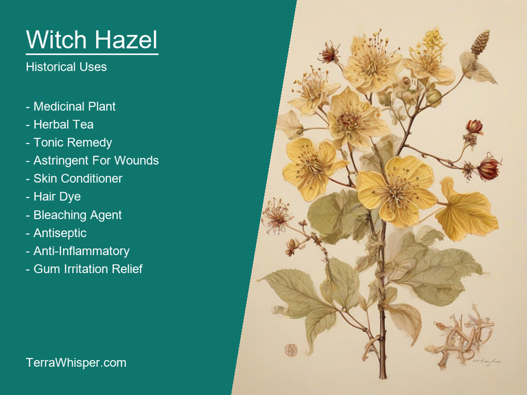

What To Know Before Using Witch Hazel (Hamamelis Virginiana)

Witch Hazel, scientifically know as Hamamelis virginiana, is a versatile plant with both medicinal and culinary uses. It's an essential ingredient in many cosmetic products like gels, lotions, creams, and toners due to its rich content of tannins, which possess anti-inflammatory properties. This makes it effective for treating skin conditions such as acne, eczema, and psoriasis. It can also help with pain relief when applied topically on bruises or minor wounds. Witch Hazel's medicinal uses extend to internal ailments like diarrhea, upset stomach, and even hemorrhoids, making it an excellent addition to herbal tea remedies.
The plant has a unique horticultural appeal as well, with its beautiful yellow flowers blooming from fall until late winter when other plants have already lost their foliage. Known for its resilience and adaptability, Witch Hazel can grow in various environments ranging from sunny to shady areas, wet or dry soils, making it an excellent choice for landscaping projects. It's often used as an attractive groundcover plant that provides color throughout the cooler months when other plants are dormant.
Botanically, Hamamelis virginiana belongs to the Hamamelidaceae family and is native to North America. The name "witch hazel" comes from its use in traditional folk medicine by early European settlers who believed it had magical healing properties. In terms of historical significance, Witch Hazel played an important role during the Civil War when it was used for medicinal purposes as a home remedy due to its anti-inflammatory and antiseptic qualities. Today, this versatile plant continues to provide not only aesthetic appeal but also a range of health benefits in multiple ways - from cosmetics and culinary applications to medicine and ornamental uses.
In this article, you will discover what are the medicinal and culinary uses of witch hazel. Then, you'll learn how to cultivate it, what is its botanical profile, and how it was used historically.
What Are The Medicinal Uses Of Witch Hazel?
Witch hazel (Hamamelis virginiana) has many health benefits, such as relieving minor itches, pain reduction for bruises and swelling, soothing of bug bites and skin irritations, reducing hemorrhoids, alleviating the symptoms of eczema, and even serving as a natural deodorant. Its health properties come from several naturally occurring compounds like polyphenols, tannins, and volatile oils that make up the plant's complex chemistry.
The following illustration lists the most important uses of witch hazel in medicine.

The medicinal constituents in witch hazel are responsible for its antiseptic, anti-inflammatory, astringent, and hemostatic properties. These properties can help address various health conditions such as skin irritations or cuts, wounds, inflamed throat or mouth sores, swollen nasal passages due to colds, and acute congestion among others. The active components in witch hazel extract are believed to work by constricting small blood vessels near the skin's surface, reducing bleeding and inflammation.
The most commonly used parts of the witch hazel plant for medicinal purposes include its bark, leaves, and twigs that yield potent astringents when extracted using various techniques. Most often, these extracts are prepared in forms such as tinctures, ointments, and even tablets to be easily consumed or applied on the affected area of the body. For topical relief of bruises or swelling, cold witch hazel compresses are popularly used. The compressed leaves can be either infused with water or directly applied to the skin for a cooling effect.
While witch hazel generally has few side effects, some potential consequences may arise from improper usage, which should be considered. For instance, when taken internally, it might cause mild gastrointestinal issues like stomach discomfort or nausea in certain individuals. Additionally, those with sensitive skin could experience irritation due to the plant's high tannin content if not used carefully.
To ensure safe and effective use of witch hazel, it is essential to follow proper precautions. Firstly, seek medical advice before using witch hazel as a primary remedy, particularly when experiencing persistent or severe symptoms. Additionally, be cautious of consuming large doses as excessive intake may lead to adverse effects. Also, conduct a patch test before applying the extract on your skin if you have never used it in the past and pay close attention to potential irritations.
What Are The Culinary Uses Of Witch Hazel?
Witch hazel, scientifically known as Hamamelis virginiana, is a plant with multiple culinary uses. It has been incorporated into various dishes due to its distinct flavors and unique properties.
The following illustration lists the most common uses of witch hazel for culinary purposes.

The flavor profile of witch hazel can be described as mildly sweet and subtly bitter, with hints of nutty and floral notes. It often lends a pleasant touch to salads or desserts, allowing culinary enthusiasts to enhance the flavor of their creations.
The edible parts of witch hazel typically include its leaves, flowers, fruits (caries) containing seeds, and bark. These components can be utilized in various dishes, adding a unique twist to recipes while incorporating the plant's health benefits.
To make the most of witch hazel in culinary applications, it is essential to consider its versatility. The leaves can be used as a flavorful addition to soups and stews, while flowers are perfect for garnishing salads or infusing them into teas. Additionally, caries and seeds can be consumed as part of a refreshing trail mix or baked goods, contributing valuable nutrients and antioxidants.
It is important to note that while witch hazel has numerous culinary uses, it may also present side effects or potential toxicity when consumed in excess or incorrectly prepared. For a better understanding of these aspects, one should consult with a professional in the field of culinary arts and herbalism.
How To Cultivate Witch Hazel In Your Garden?
Witch Hazel (Hamamelis virginiana) is a horticultural gem that not only possesses ornamental value but also offers medicinal benefits due to its extracts being used for various purposes. For plant enthusiasts, growing this shrub can be an enriching experience with a bit of consideration toward specific environmental conditions and regular maintenance.
The following illustration lists the most important tips to cutlitvate witch hazel.

To grow Witch Hazel successfully, one must have appropriate lighting, soil, and water requirements in mind. The ideal location should provide partial shade to full sun exposure depending on the cultivar, while the soil should be acidic (pH between 4.5 -6), well-draining and moderately fertile. Plant it within 2-3 meters of a building or a structure that will support its growth by providing protection from harsh winds and shelter.
The ideal growing conditions for Witch Hazel can greatly enhance the overall appearance and health of this attractive horticultural specimen. It's best to plant in zones 4 through 9, ensuring it receives at least 6 hours of sunlight daily during its growing season. Adequate watering is crucial during the first year after planting, gradually reducing as the roots become established. Regular fertilization with a balanced fertilizer once or twice a year can encourage flower development and overall health.
To maintain the vibrant appearance and healthy growth of Witch Hazel, it's important to remove spent flowers and dead branches periodically during pruning sessions. This will help promote new growth and improve flower production for future seasons. In addition, controlling weeds and pests around the plant can prevent competition for essential resources such as water and nutrients while also minimizing potential damage from insects or diseases.
By following these key aspects of horticulture related to Witch Hazel (Hamamelis virginiana), you'll be able to cultivate a visually appealing, healthy plant that not only enhances your landscape but can also provide medicinal benefits. Growing and maintaining this shrub successfully will require an understanding of the specific environmental conditions it thrives in as well as regular care for optimal health and vibrancy.
What Is The Botanical Profile Of Witch Hazel?
Witch Hazel, with botanical name Hamamelis virginiana, belongs to the domain Eukarya, kingdom Plantae, phylum Magnoliophyta, class Magnoliopsida, order Hamamelidales, family Hamamelidaceae, genus Hamamelis, and species virginiana. Common names for this plant include Winterbloom, Sweet Osier, Jang-ji, Witzenzweig, and Yan Zhi.
The following illustration display the botanical profile of witch hazel.

There are several variants of Witch Hazel such as H. vernalis with more showy yellow flowers, H. x intermedia which is a hybrid between H. virginiana and H. japonica, having a unique combination of features, H. japonica that produces early yellow or orange blossoms on twigs, and H. mollis with its weeping branches and small white to red flowers. The difference amongst the variations lies in their flower color (ranging from yellow to red), blooming period, and growth habit characteristics including bushier versus weeping branches.
Witch Hazel is native to North America and can also be found in parts of Asia. It typically grows in wetland areas, woodlands, swamps, streambanks, as well as along the edges of roads and forests. The plant thrives in full sun to partial shade and adaptable conditions.
Witch Hazel undergoes a complex life cycle with seed propagation being its primary method for re-emergence. Its flowers have a unique pollination system that attracts bees, which in turn facilitate fertilization of the plant. Following pollination, seeds are produced and dispersed through wind or water currents. These seeds eventually germinate and grow into mature Witch Hazel plants, completing its life cycle and continuing the species' reproduction process.
What Are The Historical Uses Of Witch Hazel?
The etymology of "Witch Hazel" originates from its scientific name - Hamamelis virginiana which transliterately indicates that it belongs to a genus called 'Hamam', associated with hamman or Turkish baths, and the particular kind named as 'Virgina' after Virginia in America. It was used by Native Americans for medicinal purposes before European colonization started using Witch Hazel as their remedy of choice when they arrived on American shores too due to its natural healing properties that were also said so during some myths and legends about these particular hazels being blessed with magical powers, hence the term 'Witches' was added.
The following illustration lists the most well known historical uses of witch hazel.

Cultural significance revolves around Witch Hazel as both plants grown domestically by settlers for herbal teas or medicinal uses such as salve to treat cuts and bruises; also it is used in hair styling due its astringent effects when applied on scalp. It has been symbolized throughout history with various meanings, from fertility charms during the May festivities held at bachelor nights pre-wedding rituals till being viewed as an emblem of strength and perseverance by suffragettes who wore them proudly against their dresses amidst battlecry for women's right to vote.
Mythology associated with Witch Hazel include Native American stories which depict it playing a significant role as sacred plant used in healing rituals conducted amongst tribal members while some believe its presence around graves helped keep spirits resting contentedly therein; also European folklore has tales where witches were said to use this magical herb for their spells or elixirs further enhancing the 'Witch' part of Wich Hazel.
Literature references include works by famous authors like William Shakespeare in which his character MacBeth was advised using potions made from various ingredients including witch hazels extracts as remedy; Charlotte Bronte's Jane Eyre talks about a love-struck woman who used Witch Hazel to cure her heartache.
Folklore beliefs highlight uses of this plant in folk medicine practices involving making teas, tinctures or infusions which helped treat various health issues such as cold and cough along with use in household applications for cleaning purposes due its antiseptic qualities. Additionally it has also been employed during times like mourning rituals where people used wreaths made from Witch Hazel branches laid around the gravesite adding an air of serenity to commemorate those gone but never forgotten which further strengthened ties between folkloristic customs and this fascinating plant.